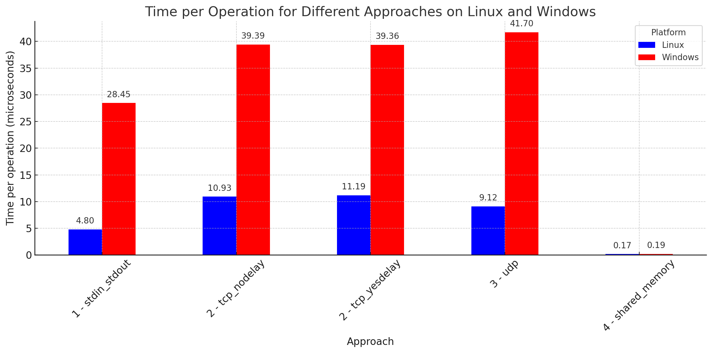

I wanted to explore different ways of communicating between different processes executing on the same machine, and doing so as fast as possible. We're focussing on high speed inter-process communication (IPC), but some of these approaches can be extended across a network. We'll do this exploration in Rust.
A reminder that since these are independent processes, most approaches you'd take within-process are unavailable to us. Rather than communicating between threads, or between asynchronous routines, these are techniques to shared data between different programs. They might not even both be written in Rust.
The code will mostly be snippets, but the full source is available here, with benchmark results at the end.
The Problem
We want to send a message ("ping") from one process to another, and when it's received reply with an acknowledgement ("pong"). This cycle gives us an opportunity to time how long it takes to round trip between two processes. Timing is complicated, and there is a note on it below but we'll run lots of cycles, and calculate average time from there.
We'll set up all the experiments as similarly as possible, with a producer process sending a ping, and a consumer processes replying with a pong. Performance profiling can lead one down a deep rabbit hole, but hopefully this experiment is simple enough that we'll be able to largely isolate the effect of the communication. Though I don't doubt keen-eyed readers will highlight optimisations missed, or operations outside the communication that are not as computationally-free as I've assumed.
Note that we're focussing on low-latency here, not high-throughput. Within High-Performance Computing they are related, but are focussed on different goals. As an example to illustrate the difference, imagine a piece of software that performs linear algebra tasks by outsourcing those computations to the GPU. For some problem sets (like training Neural Networks) the time taken to complete the training will be significantly faster on the GPU - the calculations performed per second (or throughput) will be much higher. However there is a cost to marshalling and shipping the data onto the GPU in the first place, and it will never be quicker to multiply two small matrices together like that.
A Note on Timing
We tend to assume that computers keep precise, and synchronised clocks. And compared to humans, they largely do. However when trying to measure very quick operations, there are limits to this. For starters, I'm working on a PC with a 4GHz processor. In order to measure something in single cycles, that means I need a clock capable of 0.25ns time resolution - or the time taken for light to travel roughly 10cm. Electrical signals move significantly slower than this, so for a clock outside the processor, even the time taken to sample the timer will dwarf the time taken to perform a few cycles of calculation.
Consider the clock attached to the coin battery on your motherboard. This allows the system to be disconnected from the mains, plugged back in and still know the current time. This is known as a Real Time Clock (RTC). These mostly run at 32.768 kHz (2^15 Hz), only giving them a theoretical resolution of 30 µs - or about a hundred thousand clock cycles. What's more they are often configured to produce time at a resolution much lower than that - clearly that clock isn't going to cut it.
The traditional solution is to use a Time Stamp Counter or TSC. This is a processor register that keeps ticking up at the rate of the processor clock speed - so should offer sufficient resolution for our needs. Traditionally the x86 instruction RDTSC is used to read its value. However given the nature of modern CPUs with varying clockspeeds, hyperthreading, deep pipelines, and the fear of cache/timing attacks, it's more complicated than this. On Windows the Microsoft suggestion is to use the QueryPerformanceCounter function, and on Linux clock_gettime(CLOCK_MONOTONIC) - but note these are both system calls (more on those later). Their resolution is also hardware dependent, if you have a newer device (within 10 years) this may be an HPET , or it could be a modern incarnation of the TSC. Either way these benchmarks are going to yield different results on different hardware and different operating systems, even if the code ran similarly.
Post takeaway - timing short-duration events is difficult. If in doubt, run enough iterations of your event such that the total completed time is in milliseconds, and then whatever timing source your benchmarking suite relies on should lead to an accurate result.
To learn about the pain of synchronising multiple clocks like this on a network, read or listen this incredible in-depth piece from Jane Street: https://signalsandthreads.com/clock-synchronization/
Benchmarking
This was an opportunity for me to try out Divan for benchmarking. It's a comfy benchmarking tool, with the goal of being more ergonomic than Criterion.
I'll save offering judgment yet as I haven't used it a whole lot, but it seems to do what I need it to do. For each approach we will:
- Create the consumer process, and wait for it to become available
- Prepare data and open connections in both processes, and wait for them to complete
- Start timing
- Run the ping / pong cycle a number of times
- Stop timer
- Get an average time per operation
Fortunately divan gives the tools for that, and allows us to annotate the benches with how many operations were executed, and then produce averages based on that (with some caveats). An example benchmark is here:
#[divan::bench]
fn stdin_stdout(bencher: Bencher) {
let n = 1000;
let mut pipe_runner = ipc::pipes::PipeRunner::new(false);
let mut return_buffer = pipe_runner.prepare();
bencher
.counter(divan::counter::ItemsCount::new(n))
.bench_local(move || {
pipe_runner.run_inner(n, &mut return_buffer)
});
}
Approach 1 - Pipes
This is the first thing that comes to mind to connect processes on the same machine. Like cat | grep we'll just connect stdout of the producer to stdin of the consumer, and vice-versa. This will work on Windows, Linux, and presumably MacOS.
The consumer process reads five bytes into an array from stdin, checks if they're equal to ping followed by a newline, and then responds appropriately. It'll also respond to pong.
use std::io::{stdin, stdout, Read, Write};
fn main() {
let mut arr = [0u8, 0, 0, 0, 0];
loop {
let read_result = stdin().read_exact(&mut arr);
if read_result.is_ok() {
let output = match &arr {
b"ping\n" => b"pong\n",
b"pong\n" => b"ping\n",
_ => b"Error",
};
stdout().write(output).unwrap();
}
}
}
The producer process is a little more complex as it has to create and handle consumer first, but pushes out a ping , waits for a response, and then panics if it's not pong.
pub fn run_inner(&mut self, n: usize, mut return_value: &mut [u8; 5]) {
if let Some(ref mut pipes_input) = self.pipe_proc.stdin {
if let Some(ref mut pipes_output) = self.pipe_proc.stdout {
for _ in 0..n {
pipes_input.write(b"ping\n").unwrap();
pipes_output.read_exact(return_value).unwrap();
if return_value != b"pong\n" {
panic!("Unexpected response")
}
}
}
}
}
Aside from some fiddly ref mut treatment for the pipes, this was pretty easy to write. With more complex data structures it might be annoying as some decision would have to be made on a delimiter between messages that wasn't just newlines, but it feels fairly extendable as well.
Approach 2 - TCP
A natural approach would be to try a client and server connected via HTTP. This felt dangerously like benchmarking HTTP servers though, so instead I just went straight to TCP.
...
// Producer
impl TcpRunner {
pub fn new(start_child: bool, tcp_nodelay: bool) -> TcpRunner {
let listener = TcpListener::bind("127.0.0.1:0").unwrap();
let port = listener.local_addr().unwrap().port();
let exe = crate::executable_path("tcp_consumer");
let child_proc = if start_child {
Some(Command::new(exe).args(&[port.to_string(), tcp_nodelay.to_string()]).spawn().unwrap())
} else {
None
};
let stream = TcpStreamWrapper::from_listener(listener, tcp_nodelay);
Self { child_proc, wrapper: stream, tcp_nodelay }
}
pub fn run(&mut self, n: usize, print: bool) {
// TODO: Decide whether this can be done without copying from the socket
let mut buf = [0u8; 4];
for _ in 0..n {
self.wrapper.stream.write(b"ping").unwrap();
self.wrapper.stream.read_exact(&mut buf).unwrap();
if !buf.eq(b"pong") {
panic!("Sent ping didn't get pong")
}
}
}
}
...
// pipes_consumer.rs
// Consumer
fn main() {
let args: Vec<String> = std::env::args().collect();
let port = u16::from_str(&args[1]).unwrap();
let nodelay = bool::from_str(&args[2]).unwrap();
let mut wrapper = ipc::tcp::TcpStreamWrapper::from_port(port, nodelay);
let mut buf = [0u8; 4];
while let Ok(_) = wrapper.stream.read(&mut buf) {
if buf.eq(b"ping") {
wrapper.stream.write(b"pong").unwrap();
} else {
panic!("Received unknown value {:?}", buf)
}
}
}
All in all, this was fairly simple. Currently ping is written to the socket, copied off, and then checked. Pong is then written back. There is a comment in the code highlighting this, but it's not clear to me whether the socket can be read without copying it to a local buffer. Given it's only 5 bytes, and a system call would be required either way, this is likely negligible.
The only other item of interest is that we can set TCP_NODELAY, which disables Nagle's algorithm. Generally TCP waits briefly to build a packet large enough to be worth sending. Given that we are looking for fast transmission, it makes sense to disable this. Benchmarks with and without this setting are given. Spoiler - it didn't seem to change anything.
Implementation wise, it was slightly more complex than the previous case. A port to connect to had to be passed to the consumer, a connection established, but not too difficult. I felt comfortable writing this code, and I also liked that it could be split across a network if needed. For complex usecases I'd probably miss some HTTP niceties, but for firing packets back and forth this felt flexible and maintainable.
Approach 3 - UDP
Naturally, the next approach was to try UDP. UDP is traditionally used in these contexts for a "fire and forget" mechanism. Unlike TCP the protocol doesn't offer a way of recovering lost or out of order packets. This can be an advantage, because it keeps the connection from getting too "chatty" but if consistency is important those layers need to be implemented manually - either in or out of band. We'll sidestep this discussion because we're running both processes on the same machine and using the loopback adapter, but note that it's still possible to lose packets this way. If the socket buffer is filled with more data than can be read off of it in the reading loop, it will be unapologetically dropped. Perhaps a demonstration for another post.
I'll just show the producer as the consumer is fairly similar.
pub struct UdpRunner {
child_proc: Option<Child>,
wrapper: UdpStreamWrapper,
their_port: u16,
}
impl UdpRunner {
pub fn new(start_child: bool) -> UdpRunner {
let wrapper = UdpStreamWrapper::new();
let their_port = portpicker::pick_unused_port().unwrap();
let exe = crate::executable_path("udp_consumer");
let child_proc = if start_child {
Some(
Command::new(exe)
.args(&[wrapper.our_port.to_string(), their_port.to_string()])
.spawn()
.unwrap(),
)
} else {
None
};
// Awkward sleep to make sure the child proc is ready
sleep(Duration::from_millis(100));
wrapper
.socket
.connect(format!("127.0.0.1:{}", their_port))
.expect("Child process can't connect");
Self {
child_proc,
wrapper,
their_port,
}
}
pub fn run(&mut self, n: usize, print: bool) {
let start = Instant::now();
let mut buf = [0u8; 4];
for _ in 0..n {
self.wrapper.socket.send(b"ping").unwrap();
self.wrapper.socket.recv(&mut buf).unwrap();
if !buf.eq(b"pong") {
panic!("Sent ping didn't get pong")
}
}
}
}
Overall this worked ok, but it was significantly more fiddly for a few reasons:
- As UDP is a broadcast protocol, it doesn't care whether anyone is listening. This means we have to spin up the consumer, connect to the producer, and confirm that they are connected. This could be done out of band, but I've just hacked it by sleeping for a period that seems long enough for the consumer to wake up and be prepared to receive instructions
- The API was similar to the TCP API, but meant different things. Specifically the
connectmethod doesn't guarantee any connection has been made, just that the program had bound itself to a remote address that may or may not subsequently fail, or just pump data into the ether. It takes an array of address like the TCP connect method, but it has no meaningful way of deciding whether an address is useful or not (as it doesn't get a handshake) so just takes the first one and binds to it. All of this is in the documentation but it's not ergonomic. Maybebindwould be a better name, although that does have a specific meaning that may not be appropriate
These UDP downsides are well known, and it's used where they don't matter as much, or the asynchronous nature is useful. It's also possible to attach multiple listeners, which isn't possible with TCP. One can see where this might be useful, and why UDP is ubiquitous in usecases like online gaming.
Approach 4 - Shared Memory
Shared memory is a known rapid way of sharing data between processes. One process allocates a block of memory, and passes that handle to another process. Each process is then free to read from or write to that block of memory independently. If your first instinct is to fear synchronisation and race conditions, you'd be absolutely correct. What's worse is that out of the box, Rust doesn't help us here, despite usually being very helpful with that kind of thing. We're on our own, and it's going to be unsafe.
First of all we'll write the code that will execute in both the producer and consumer to create (or take) a handle to some shared memory, and then lay that out as the producer lock, the consumer lock, and a four byte buffer for us to exchange data.
// Shared memory layout
//| 0 | 1 | 2 | 3 | 4 | 5 | 6 | 7 |
//| producer lock | consumer lock | data buffer (ping or pong) |
pub struct ShmemWrapper {
pub shmem: Shmem,
pub owner: bool,
pub our_event: Box<dyn EventImpl>,
pub their_event: Box<dyn EventImpl>,
pub data_start: usize,
}
impl ShmemWrapper {
pub fn new(handle: Option<String>) -> ShmemWrapper {
let owner = handle.is_none();
// If we've been given a memory handle, attach it, if not, create one
let mut shmem = match handle {
None => shmem_conf().create().unwrap(),
Some(h) => shmem_conf()
.os_id(&h)
.open()
.expect(&format!("Unable to open the shared memory at {}", h)),
};
let mut bytes = unsafe { shmem.as_slice_mut() };
// The two events are locks - one for each side. Each side activates the lock while it's
// writing, and then unlocks when the data can be read
let ((our_event, lock_bytes_ours), (their_event, lock_bytes_theirs)) = unsafe {
if owner {
(
BusyEvent::new(bytes.get_mut(0).unwrap(), true).unwrap(),
BusyEvent::new(bytes.get_mut(2).unwrap(), true).unwrap(),
)
} else {
(
// If we're not the owner, the events have been created already
BusyEvent::from_existing(bytes.get_mut(2).unwrap()).unwrap(),
BusyEvent::from_existing(bytes.get_mut(0).unwrap()).unwrap(),
)
}
};
// Confirm that we've correctly indexed two bytes for each lock
assert!(lock_bytes_ours <= 2);
assert!(lock_bytes_theirs <= 2);
if owner {
our_event.set(EventState::Clear).unwrap();
their_event.set(EventState::Clear).unwrap();
}
ShmemWrapper {
shmem,
owner,
our_event,
their_event,
data_start: 4,
}
}
pub fn signal_start(&mut self) {
self.our_event.set(EventState::Clear).unwrap()
}
pub fn signal_finished(&mut self) {
self.our_event.set(EventState::Signaled).unwrap()
}
pub fn write(&mut self, data: &[u8; 4]) {
let mut bytes = unsafe { self.shmem.as_slice_mut() };
for i in 0..data.len() {
bytes[i + self.data_start] = data[i];
}
}
pub fn read(&self) -> &[u8] {
unsafe { &self.shmem.as_slice()[self.data_start..self.data_start + 4] }
}
}
With these structures in place, we simply lock, write, unlock, and then read when we're allowed to.
pub fn run(&mut self, n: usize, print: bool) {
for _ in 0..n {
// Activate our lock in preparation for writing
self.wrapper.signal_start();
self.wrapper.write(b"ping");
// Unlock after writing
self.wrapper.signal_finished();
// Wait for their lock to be released so we can read
if self.wrapper.their_event.wait(Timeout::Infinite).is_ok() {
let str = self.wrapper.read();
if str != b"pong" {
panic!("Sent ping didn't get pong")
}
}
}
}
This code was horrible to write, and took some time to get right. I'm almost certain there are still bugs in there. It was complicated because:
- We have to do all of our own synchronisation without much help. In some situations, you can imagine using a queue or messaging system to communicate out of band between the processes, letting them know when it's safe to read or write. Given our messages are so small though, this would kill all the performance we've gone to the effort of achieving
- It's very low level. We have to marshal the bytes ourselves, and use a lot of unsafe to do so. This also exposes us to changes in the layout of structs that would lead to hard-to-find bugs
- I came across several bugs. On the Windows implementation of the most featureful crate there is a minimum page size bug when allocating memory pages
- It's not clear whether underlying memory can be easily resized. For our purposes this isn't a problem given we only have 8 bytes, but you can imagine this would quite quickly become an issue
To be honest, unless I was absolutely sure I needed all of the shared memory performance, I wouldn't want to use code like this in Production. Other languages have shared memory frameworks to make things like this easier, but I wasn't able to find anything in Rust when I looked.
Results
I've added results for Windows and Linux, but take these with a significant grain of salt as they are different machines. It's probably fair to compare them within platform though.
| Platform | Approach | Time per Operation (µs) | Ops per Second | Time Comparison to Shared Memory |
|---|---|---|---|---|
| Linux | 1 - stdin_stdout | 4.802 | 208k | 27.7x |
| Linux | 2 - tcp_nodelay | 10.930 | 92k | 63.1x |
| Linux | 2 - tcp_yesdelay | 11.190 | 89k | 64.6x |
| Linux | 3 - udp | 9.120 | 110k | 52.6x |
| Linux | 4 - shared_memory | 0.173 | 5770k | 1.0x |
| Windows | 1 - stdin_stdout | 28.450 | 35k | 150.2x |
| Windows | 2 - tcp_nodelay | 39.390 | 25k | 208.0x |
| Windows | 2 - tcp_yesdelay | 39.360 | 25k | 207.8x |
| Windows | 3 - udp | 41.700 | 24k | 220.2x |
| Windows | 4 - shared_memory | 0.189 | 5280k | 1.0x |

The time per operation is similar for most of the approaches, apart from using shared memory. With shared memory we can perform a ping-pong in under 200ns, or around 1000 processor cycles. I have to admit, I still found this a little disappointing. Moving a few bytes around should be faster than that, but I'm going to resist digging too deep yet. Preparing an environment with core-pinning and the correct thread priority is tricky, and given we have to do this with two concurrently running processes, it's even more difficult. Consider too that with hyper-threaded cores, should these processes run on different physical cores, or different logical cores? Do I have to disable Spectre/Meltdown type mitigations? Which memory cache level can we share? Having sunk a lot of hours similar situations before, I'm going to leave the log unflipped for now.
System calls
But why are all the other methods so slow - and not only that, but so similarly slow? Well Linux gives us the easiest tool to see what's happening strace. strace allows us to run a command and see what system calls are made by that command. We can test this with the tcp runner, with 10 cycles of ping-pong. It generates a large amount of results, especially since I'm running this through cargo, but we can trim it down and see that in the heart of the execution there are system calls. Given I've only attached this to the producer process, and we can see that there are two systems calls per cycle (a read and a write), so for the whole cycle we require four system calls.
$ strace -r cargo run --release -- -n 10 -m tcp
...
0.000694 accept4(3, {sa_family=AF_INET, sin_port=htons(33404), sin_addr=inet_addr("127.0.0.1")}, [128 => 16], SOCK_CLOEXEC) = 4
0.000939 setsockopt(4, SOL_TCP, TCP_NODELAY, [1], 4) = 0
0.000866 close(3) = 0
0.006059 sendto(4, "ping", 4, MSG_NOSIGNAL, NULL, 0) = 4
0.000495 recvfrom(4, "pong", 4, 0, NULL, NULL) = 4
0.000125 sendto(4, "ping", 4, MSG_NOSIGNAL, NULL, 0) = 4
0.000143 recvfrom(4, "pong", 4, 0, NULL, NULL) = 4
0.000040 sendto(4, "ping", 4, MSG_NOSIGNAL, NULL, 0) = 4
0.000131 recvfrom(4, "pong", 4, 0, NULL, NULL) = 4
0.000113 sendto(4, "ping", 4, MSG_NOSIGNAL, NULL, 0) = 4
0.000130 recvfrom(4, "pong", 4, 0, NULL, NULL) = 4
0.000133 sendto(4, "ping", 4, MSG_NOSIGNAL, NULL, 0) = 4
0.000136 recvfrom(4, "pong", 4, 0, NULL, NULL) = 4
0.000112 sendto(4, "ping", 4, MSG_NOSIGNAL, NULL, 0) = 4
0.000130 recvfrom(4, "pong", 4, 0, NULL, NULL) = 4
0.000112 sendto(4, "ping", 4, MSG_NOSIGNAL, NULL, 0) = 4
0.000129 recvfrom(4, "pong", 4, 0, NULL, NULL) = 4
0.000112 sendto(4, "ping", 4, MSG_NOSIGNAL, NULL, 0) = 4
0.000129 recvfrom(4, "pong", 4, 0, NULL, NULL) = 4
0.000634 sendto(4, "ping", 4, MSG_NOSIGNAL, NULL, 0) = 4
0.000169 recvfrom(4, "pong", 4, 0, NULL, NULL) = 4
0.000286 sendto(4, "ping", 4, MSG_NOSIGNAL, NULL, 0) = 4
0.000227 recvfrom(4, "pong", 4, 0, NULL, NULL) = 4
0.000174 write(1, "10 cycles completed in 3ms 669us"..., 4010 cycles completed in 3ms 669us 247ns
) = 40
0.000166 write(1, "2725.5383 per second\n", 212725.5383 per second
...
How expensive are system calls? Well I've used strace -r to show times per call, but given previous discussions about how calling a timer can affect times (it adds at least one syscall per line) I won't take those numbers as ironclad. Especially strace is pausing and unpausing the process. Roughly roughly speaking though we're looking at least a few microseconds per read or write. Four of those, and you can see why tcp struggles to do better than 10µs per operation. This is similar for all of the other approaches.
System calls on Linux are complex, and there are various mitigations, but having to wipe registers, validate, drop down into the kernel ring, get the output, and then undo those steps takes time. So if you really care about microseconds, try and avoid them in your hot loops.
For the shared memory approach we can see that after the mmap to create the block of shared memory, there are no calls in our loop, so we don't pay that cost.
$ strace -r ./target/release/ipc -n 10 -m shmem
...
0.000215 mmap(NULL, 8, PROT_READ|PROT_WRITE, MAP_SHARED, 3, 0) = 0x7f81dac8b000
0.000091 mmap(NULL, 36864, PROT_READ|PROT_WRITE, MAP_PRIVATE|MAP_ANONYMOUS|MAP_STACK, -1, 0) = 0x7f81dac46000
0.000051 rt_sigprocmask(SIG_BLOCK, ~[], [], 8) = 0
0.000140 clone3({flags=CLONE_VM|CLONE_VFORK, exit_signal=SIGCHLD, stack=0x7f81dac46000, stack_size=0x9000}, 88) = 70905
0.000653 munmap(0x7f81dac46000, 36864) = 0
0.000066 rt_sigprocmask(SIG_SETMASK, [], NULL, 8) = 0
0.000058 clock_nanosleep(CLOCK_REALTIME, 0, {tv_sec=1, tv_nsec=0}, 0x7ffe52d29560) = 0
1.576578 write(1, "10 cycles completed in 521us 91n"..., 3510 cycles completed in 521us 91ns
...
Conclusion
I was surprised at how similarly most things performed. I did a cursory investigation into Linux-specific approaches like dbus and Unix Domain Sockets, but they seemed to be in the same ballpark as the non-shared memory approaches. The only other thing to try would be memory-mapped files, but I thought I'd save that for when I wanted to try something similar with larger blocks of data.
If I had to do this in Production, for the majority of workloads I'd probably still use an HTTP / TCP connection. It's portable, reliable on message failure, and I could split it across machines if needs be. However for the cases where latency really matters, the maintenance overhead of using shared memory is worth it.
For anyone who wants a deeper dive, or to offer critiques and improvements, the code is available here.